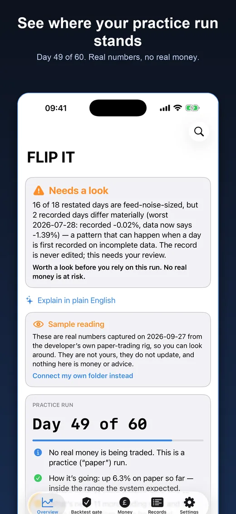
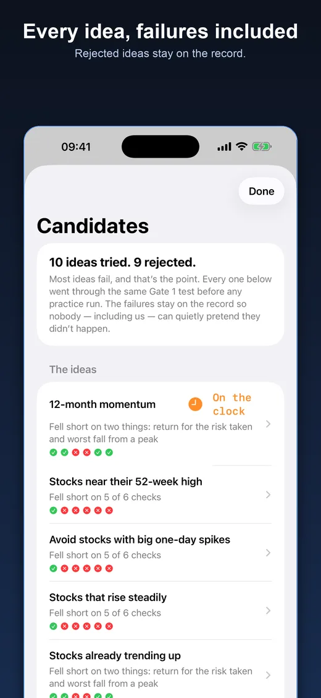
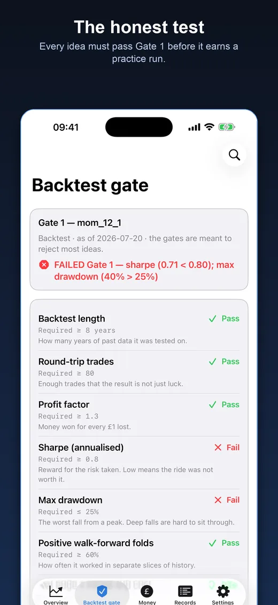
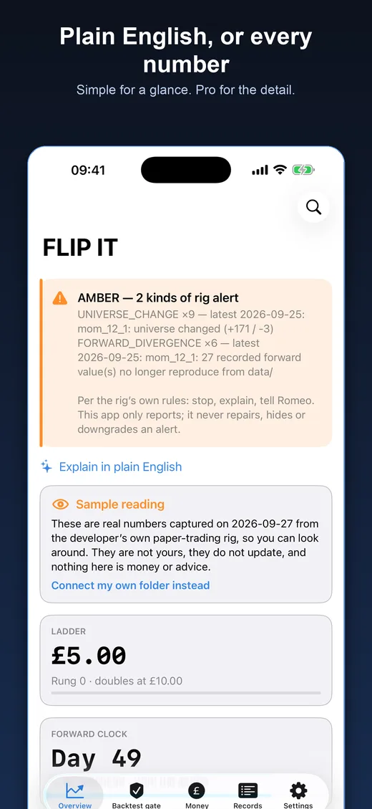
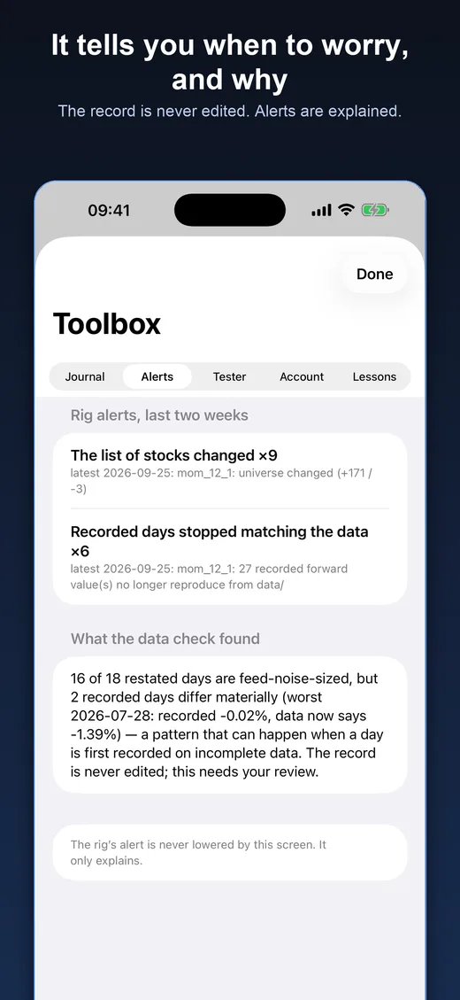
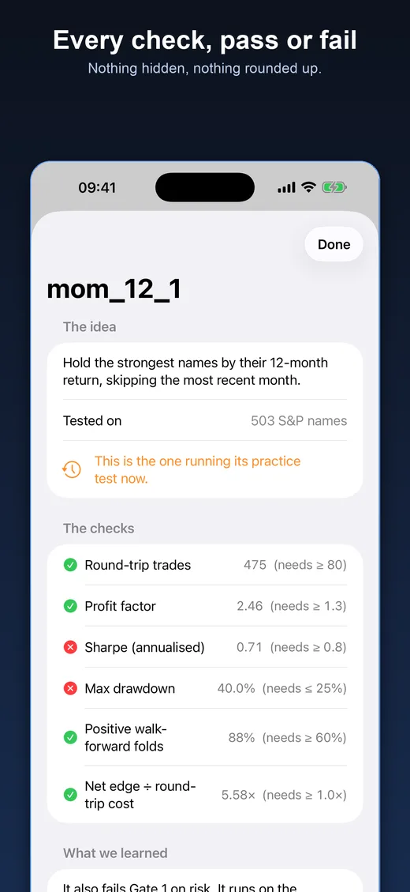

Test strategies on paper first.
FLIP IT is a calm, honest home for practice trading. Real numbers, no real money, nothing to place. It shows where a practice run stands, every idea that has been tried (failures included) and when to be careful.
Coming to the App Store. Free. Read-only. No account, no ads, no tracking.






What it does
Know where you stand
The day, the trades, and whether the run is inside the range it was expected to stay in, in plain English.
Every idea, failures included
Each idea that was tried, with every check it passed or failed. Rejected ideas stay on the record.
The honest test
An idea must pass a strict test on old data, then survive a practice run on new data, before it earns anything.
Alerts that explain themselves
It tells you when to worry, and why. The record is never edited and an alert is never quietly lowered.
Stress tests
How bad the worst drop could plausibly have been, and how the run compares with simply holding.
Simple or Pro
A plain-English answer at a glance, or every number. Watch, widgets and Siri give you the answer in a moment.
How it works
- Your rig practises. Ideas are tested on old data, then followed on paper, day by day.
- It publishes a small summary into a folder you choose, for example iCloud Drive. No server has to be running.
- FLIP IT reads that folder and tells you the truth in plain English, or with every number if you prefer.
Questions
Is FLIP IT a trading app?
No. It is a read-only tracker for a paper-trading (practice) run. It has no broker connection, cannot place an order and never holds money. It shows where a practice run stands, every idea that has been tried, and when to be careful.
Does it use real money?
No. Everything is practice. Results shown are hypothetical and do not predict real results.
Do I need my own rig to use it?
No. Open the built-in sample on the first screen: a real reading captured from the developer's own paper-trading rig, clearly labelled, so you can see every screen. To see your own numbers, choose the folder your rig publishes into, for example an iCloud Drive folder.
What data does FLIP IT collect?
None. There is no account, no analytics, no ads and no tracking. The app only reads the folder or address you choose. See the privacy policy.
Is this financial advice?
No. FLIP IT is for practice and education. It is not a broker, not advice and not an invitation to buy or sell anything.
Which devices does it run on?
iPhone and iPad (iOS 17 or later), with an Apple Watch app, Home Screen and Lock Screen widgets, and Siri support.
Why it exists
Some ideas look brilliant in a backtest and fall apart in real life. Rejecting most ideas is the point. FLIP IT keeps the record honest: rejected ideas stay on it, alerts are explained, and nothing is quietly edited.